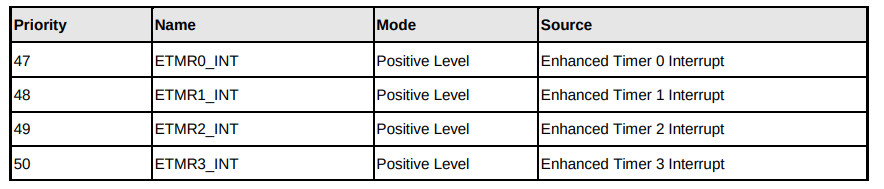
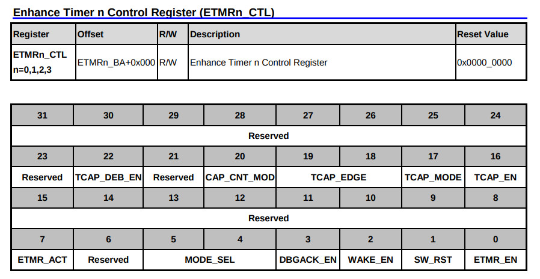
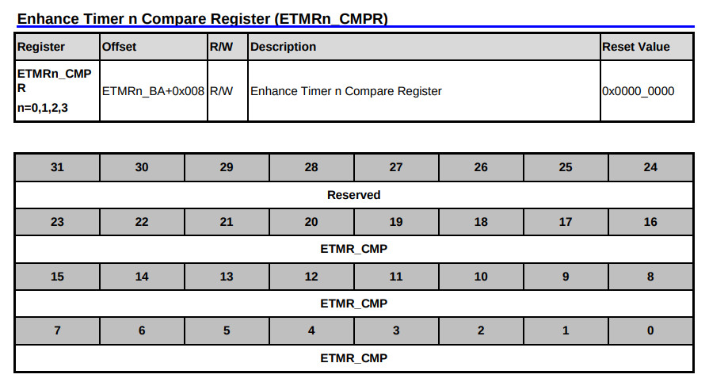
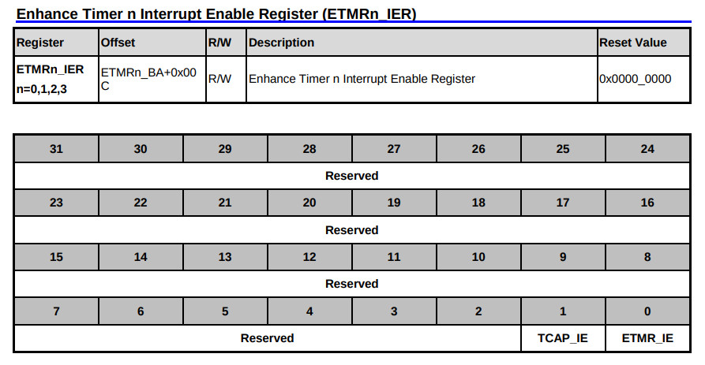
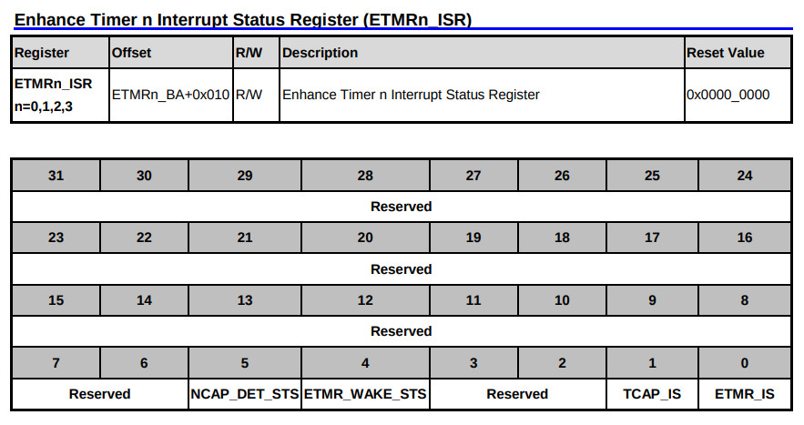
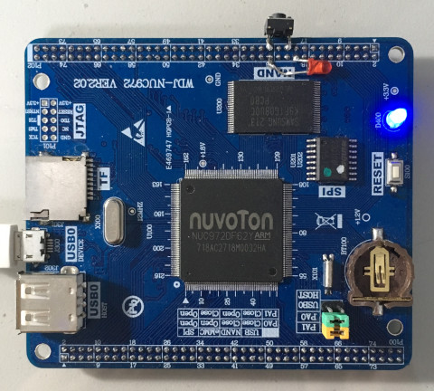
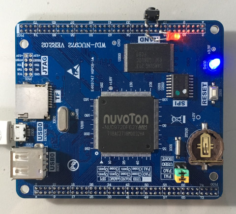

參考資訊：
https://github.com/OpenNuvoton/NUC970_NonOS_BSP
Timer Interrupt





.equ GPIOB_DIR, (0xb8003000 + 0x40)
.equ GPIOB_DATAOUT, (0xb8003000 + 0x44)
.equ CLK_PCLKEN0, (0xb0000200 + 0x18)
.equ AIC_MECRH, (0xb8002000 + 0x134)
.equ AIC_EOSCR, (0xb8002000 + 0x150)
.equ ETMR1_CTL, (0xb8001500 + 0x00)
.equ ETMR1_CMPR, (0xb8001500 + 0x08)
.equ ETMR1_IER, (0xb8001500 + 0x0c)
.equ ETMR1_ISR, (0xb8001500 + 0x10)
.data
blink: .dcb 1
.text
.align 2
.global _start
_start: b reset
_undef: b .
_swi: b .
_pabort: b .
_dabort: b .
_reserved: b .
_irq: b irq_handler
_fiq: b .
reset:
mrs r0, cpsr
bic r0, #0x80
msr cpsr_c, r0
ldr r0, =AIC_MECRH
ldr r1, =(1 << 16)
str r1, [r0]
ldr r0, =CLK_PCLKEN0
ldr r1, [r0]
ldr r2, =((1 << 3) | (1 << 5))
orr r1, r2
str r1, [r0]
ldr r0, =ETMR1_CMPR
ldr r1, =6000000
str r1, [r0]
ldr r0, =ETMR1_CTL
ldr r1, =1
str r1, [r0]
ldr r0, =ETMR1_IER
ldr r1, =1
str r1, [r0]
ldr r0, =GPIOB_DIR
ldr r1, =(1 << 0)
str r1, [r0]
ldr r0, =GPIOB_DATAOUT
ldr r1, =(1 << 0)
str r1, [r0]
ldr r0, =blink
ldr r1, =0x00
str r1, [r0]
b .
irq_handler:
ldr r0, =blink
ldr r1, [r0]
cmp r1, #0x00
beq 1f
ldr r0, =GPIOB_DATAOUT
ldr r1, =(1 << 0)
str r1, [r0]
b 2f
1:
ldr r0, =GPIOB_DATAOUT
ldr r1, =~(1 << 0)
str r1, [r0]
2:
ldr r0, =blink
ldr r1, [r0]
eor r1, #0xff
str r1, [r0]
ldr r0, =AIC_EOSCR
ldr r1, =1
str r1, [r0]
ldr r0, =ETMR1_ISR
ldr r1, [r0]
orr r1, #1
str r1, [r0]
ldr r0, =ETMR1_CTL
ldr r1, =1
str r1, [r0]
subs pc, lr, #4
.end
完成

